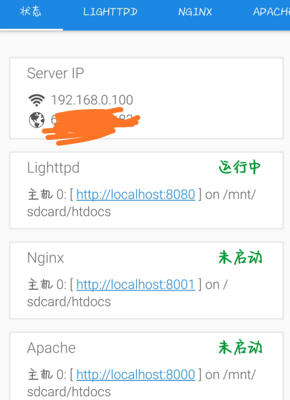
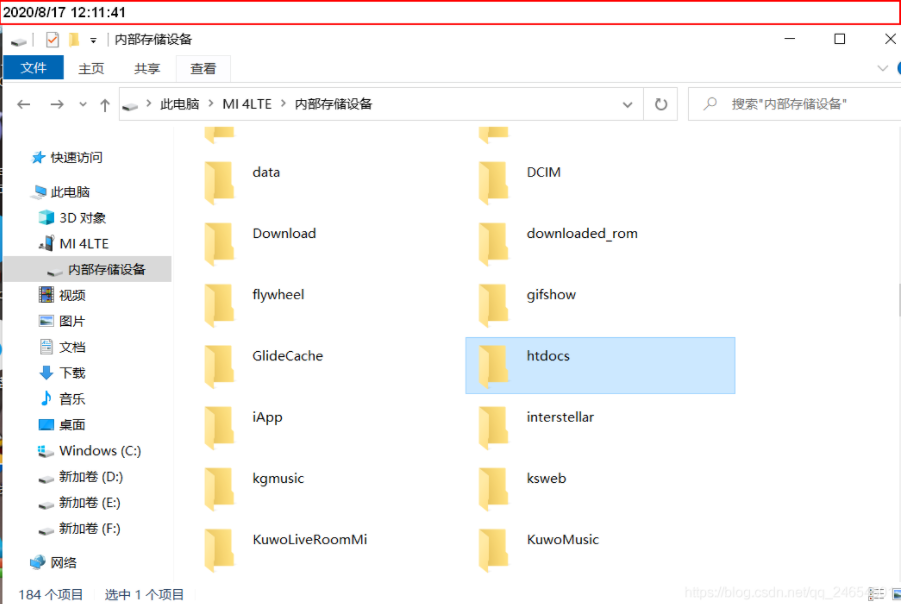
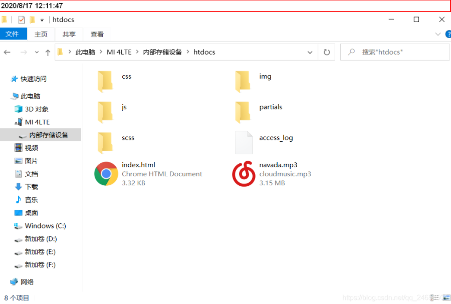
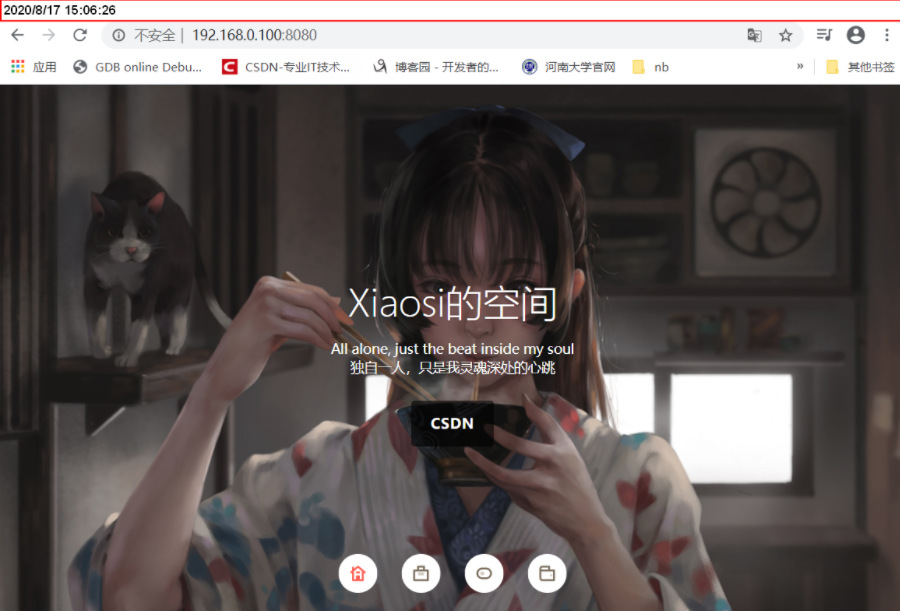
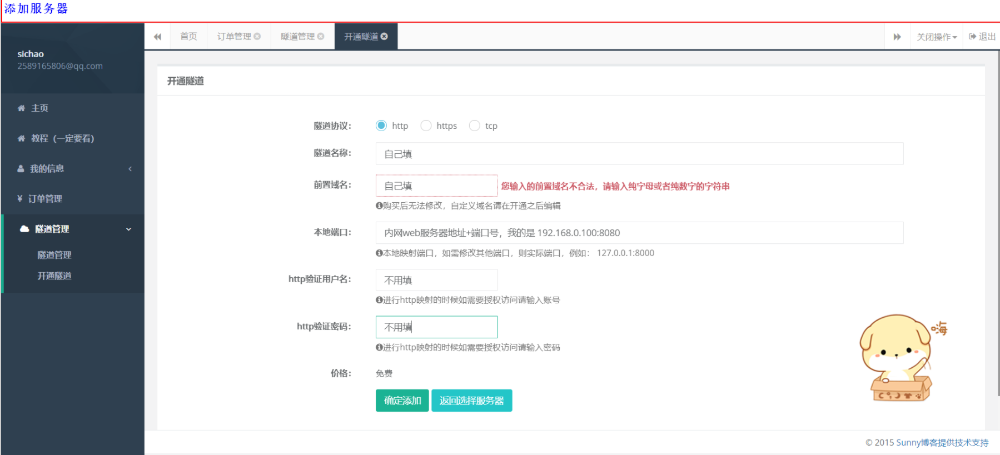
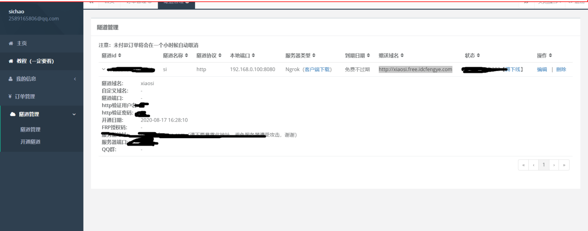
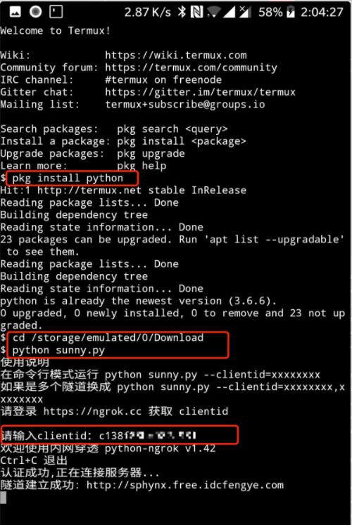
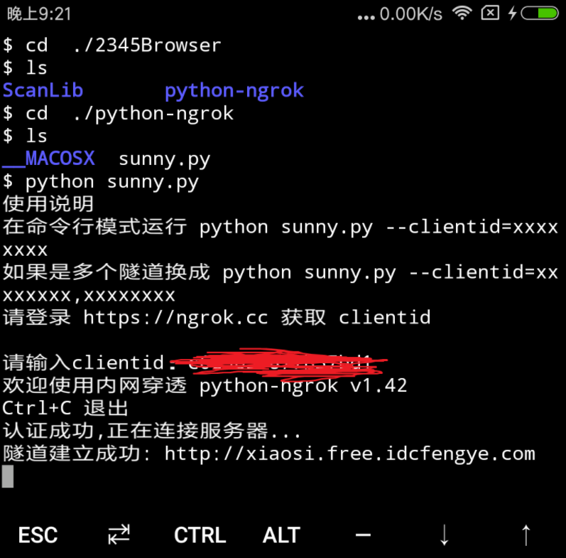
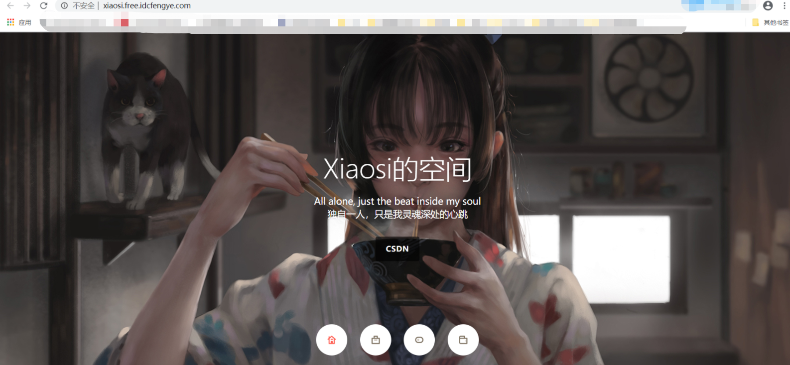

写在前面:
废旧智能手机除了能换盆O(∩_∩)O哈哈~，还能有什么其他存在的价值吗？
当然也可以作为砖头（滑稽）本篇博客介绍利用废旧手机搭建一个服务器，可以放自己的网页搭建网站
之前闲着没事，低价买了个虚拟主机，放了自己的静态网页，搭建了个人博客引导网站，后来虚拟主机被打死，凑巧了解到相关知识，于是就想利用废旧手机搭建一台服务器
当然旧手机作为服务器搭建简单网站性能方面还是可以的，如果商用还是选择购买云主机
基本思路：
安卓手机是基于Linux的，也就是说安卓手机本身就是一台Linux服务器，我们只要简单配置，就可以把它可以变成一台网站服务器
完成第一阶段此时的服务器还只是一个内网服务器，就是只能在一个局域网内访问该服务器的Web服务
而我们要想外网能访问我们的内网服务器，需要进行内网穿透
当然能在手机上搭建Web服务器的App很多，像ksweb、Linux Deploy、termux、busybox等等
这里我们使用最简单的集成工具ksweb
基本步骤分为两步：
1、手机的简单设置搭建内网服务器
2、内网穿透
使用工具：
●一部小米4旧手机
●ksweb工具
●termux工具
●内网穿透工具
●ngrok隧道
开始
一、第一阶段：手机的简单设置搭建内网服务器
1.1 手机安装ksweb*
我的手机型号是小米4
在这里插入图片描述
工具ksweb
目前为止，手机端搭建web服务器最好用的软件是Ksweb
这是一款俄罗斯人开发的基于安卓系统的web服务器，集成了php、Nginx、MySQL、Apache、FTP等
可以百度官网下载软件，不过软件收费，建议支持正版，下面百度了一个破解版版，需要自行下载
链接：https://wws.lanzoui.com/iQPVqregdpa
1.2 打开配置ksweb
安装之后打开，可以看到手机的内外网IP、端口号、网站文件根目录、各种服务
LigHttpd、Apache、Nginx是三大Web服务器，可以根据自己情况选择，这里我选择默认LigHttpd

电脑usb连接手机，找到网站文件根目录/mnt/sdcard/htdocs把自己的网页放在该目录下


然后电脑、手机连接同一个局域网，电脑打开浏览器，输入http://192.168.0.100:8080访问
若出现自己的网页信息，则成功搭建内网服务器

我的网页为简单的静态个人网页，不需要php、Mysql等服务，不在详细介绍此方面的配置问题
关于简单的数据库、phpAdmin配置，在软件中右滑找到工具界面，点击phpAdmin，选择默认的Lighttpd服务器，等待下载完成，进入可视化数据库管理页面，输入用户名root，密码空，点击执行 登录，然后修改密码
当然此时只能在一个局域网下访问，若想公网访问，需要进行第二阶段，内网穿透
二、第二阶段：内网穿透
2.1电脑端操作
电脑端首先去Ngrok官网注册一个账号，购买（有免费可以白嫖的隧道）开通隧道 http://ngrok.cc/user.html

开通之后点击 隧道管理

然后记下自己的隧道id，等会要到手机端操作
2.2手机端操作
手机端的操作可以参考Ngrok官网手册：http://ngrok.cc/_book/start/ngrok_android.html
简单就是需要手机端打开命令工具Termux，执行配置文件（我选择的是Python文件），然后输入隧道id开通隧道
Termux工具以下已提供Termux，需要注意的是Termux下载后初始化需要翻墙连一下外网，这个自行解决。随后会自动初始化配置，配置完后就不用连了，否则进去会一直转圈
链接：https://f-droid.org/repo/com.termux_117.apk
下载安装之后打开
●给Android手机安装python
pkg install python
●进入Python客户端所在的目录(如果手机浏览器下载Python脚本，为此目录，然后解压到该目录）
每个人的浏览器文件下载目录可能不同，根据自己实际情况，也可选择解压到自己找得到的文件目录
如出现Termux命令行出现打开文件夹目录权限不足的情况，需要找到手机应用权限管理，给予访问手机文件储存的权限
cd /storage/emulated/0/Download
●执行脚本
python sunny.py


上述操作设计一点Linux操作，如果操作不明白，查看上面的Ngrox官网帮助手册，里面有视频介绍~
2.3查看成果
注意手机端的ksweb、Termux不要关闭，保持在后台运行
这里提示免费的隧道可能随时失效，想要持久稳定还得淦！
这里贴上自己的个人博客引导页，想要源码的也可私信我~~
http://xiaosi.free.idcfengye.com

借鉴博客源网址：https://blog.csdn.net/qq_24654501/article/details/108052368~~